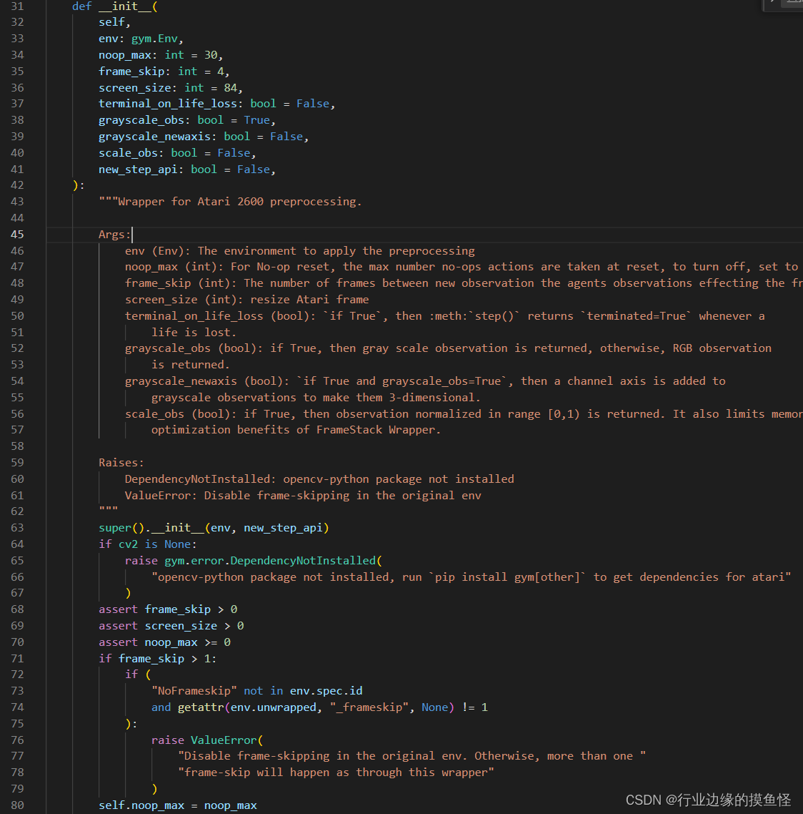

DQN coding exercise
DQN theory and practice
detect0530@gmail.com
以下是DQN完成atari游戏Pong的代码实现，包括了完整的朴素DQN实现，以及experience replay和target network的改进。代码实现基于PyTorch和OpenAI Gym。
并使用Chatgpt生成相应的代码注释，以及各个package api的介绍。
1 | USE_CUDA = torch.cuda.is_available() |
这段代码主要是用于检查是否可用CUDA（用于GPU加速），然后根据可用性设置相应的数据类型和变量。
-
USE_CUDA = torch.cuda.is_available(): 这一行代码用于检查系统中是否有可用的CUDA（NVIDIA GPU上的并行计算平台）。torch.cuda.is_available()返回一个布尔值，指示CUDA是否可用，并将其存储在变量USE_CUDA中。 -
dtype = torch.cuda.FloatTensor if torch.cuda.is_available() else torch.FloatTensor: 这一行代码根据CUDA的可用性选择数据类型。如果CUDA可用，数据类型将设置为torch.cuda.FloatTensor（即GPU上的浮点数类型），否则将设置为torch.FloatTensor（CPU上的浮点数类型）。这有助于在代码中灵活地切换CPU和GPU。 -
Variable = lambda *args, **kwargs: autograd.Variable(*args, **kwargs).cuda() if USE_CUDA else autograd.Variable(*args, **kwargs): 这一行代码定义了一个名为Variable的函数（似乎是用于创建 PyTorch 的 Variable 对象）。这个函数根据USE_CUDA的值，选择使用 GPU 还是 CPU。如果USE_CUDA为 True，它将创建一个带有.cuda()的 Variable，否则将创建一个在 CPU 上的 Variable。
这段代码的目的是根据是否有可用的 CUDA，动态地选择使用 CPU 还是 GPU，并设置相应的数据类型和变量。
1 | # Create and wrap the environment |
关于env的预处理函数：

plt.imshow(test.__array__()[0,...]) 这行代码使用 Matplotlib 库中的 imshow 函数来显示 test 中的图像。让我逐步解释：
-
test: 在之前的代码中，test是通过执行随机动作后的环境新状态。 -
test.__array__(): 这可能是将test转换为 NumPy 数组的方法。这是因为在 PyTorch 中的Tensor对象没有直接的__array__方法，但 NumPy 数组有这个方法。通过调用__array__()，你可以将 PyTorch Tensor 转换为 NumPy 数组。 -
[0,...]: 这是 NumPy 数组的索引操作，表示选择数组的第一个维度的所有元素。在这里，[0,...]表示选择数组的第一个通道（通常是颜色通道，例如红色通道对应的是第一个通道），并且...表示选择该通道的所有剩余维度。 -
plt.imshow(...): 最终，imshow函数被用于显示图像。这里的...部分就是通过之前的步骤选择的图像数据。plt.imshow用于在图形用户界面中显示图像，其中...部分应该是一个二维数组，代表图像的像素值。
1 | class DQN(nn.Module): |
实际输入的向量为84844，可以自己手动验算看fc4是不是7764。
1 | class Memory_Buffer(object): |
这是一个简单的经验回放缓冲区（Experience Replay Buffer）的实现，用于存储和采样智能体与环境之间的交互数据。
-
def __init__(self, memory_size=100000):: 初始化函数，创建一个经验回放缓冲区对象。默认情况下，缓冲区的最大大小为100,000个样本。 -
self.buffer = []: 用于存储经验元组的列表，每个元组包含(state, action, reward, next_state, done)。 -
self.memory_size = memory_size: 缓冲区的最大大小。 -
self.next_idx = 0: 下一个要插入的位置的索引。 -
def push(self, state, action, reward, next_state, done):: 将一个经验元组添加到缓冲区中。state: 当前状态。action: 代理选择的动作。reward: 动作导致的奖励。next_state: 下一个状态。done: 表示是否达到终止状态。
如果缓冲区未满，直接添加；如果缓冲区已满，覆盖之前的经验元组。
-
def sample(self, batch_size):: 从缓冲区中随机抽样一批经验元组。batch_size: 抽样的批次大小。
返回一个包含
batch_size个经验元组的元组(states, actions, rewards, next_states, dones)。 -
def size(self):: 返回当前缓冲区中存储的经验元组数量。
这个类实现了一个循环缓冲区，即当缓冲区满时，新的经验会覆盖最早添加的经验，保持缓冲区的大小不变。这种经验回放缓冲区常用于深度强化学习中，以解决样本的相关性问题，并提高训练的稳定性。
语法补充：
np.concatenate(states) 是将一个包含多个 NumPy 数组的列表 states 沿着指定的轴（默认为第一个轴，即行）进行拼接的操作。在这个上下文中，states 列表包含了从经验回放缓冲区中抽样得到的多个状态数组。
假设 states 是一个形如 [state_1, state_2, ..., state_n] 的列表，其中每个 state_i 是一个 NumPy 数组，那么 np.concatenate(states) 将把这些数组沿着第一个轴拼接在一起，生成一个新的数组。
举例说明，如果 state_1、state_2 和 state_3 是形状为 (84, 84, 4) 的三个状态数组，那么 np.concatenate(states) 将生成一个形状为 (3 * 84, 84, 4) 的数组，其中第一个维度是 3 * 84，表示将三个状态沿着第一个轴叠加在一起。
这种拼接的操作对于将多个状态作为输入传递给神经网络是有用的，因为神经网络通常期望接收整个状态矩阵作为输入，以捕获状态之间的关联信息。
1 | class DQNAgent: |
这是我们的agent主类，把各种配件整合了起来。
1 | def observe(self, lazyframe): |
这是DQNAgent类的observe方法，该方法用于将Lazy帧（Lazy frame）转换为神经网络接受的张量形式。
state = torch.from_numpy(lazyframe.__array__()[None]/255).float(): 将Lazy帧转换为PyTorch张量。解释如下：
lazyframe.__array__()：将Lazy帧转换为NumPy数组，表示环境当前的图像状态。[None]：通过添加额外的维度，将数组形状变为(1, height, width, channels)，其中1表示批次大小为1。/255：对数组进行归一化，将像素值缩放到 [0, 1] 范围内。torch.from_numpy(...).float()：将NumPy数组转换为PyTorch张量，并将其数据类型设置为float。
lazyframe 是一种图像帧的延迟加载（Lazy Loading）表示。在强化学习环境中，特别是使用 OpenAI Gym 这样的工具时，游戏环境通常输出的图像帧以 LazyFrame 的形式表示。
LazyFrame 是 Gym 的一种优化形式，它允许推迟对图像数据的实际加载，直到需要使用它时才进行加载。这有助于减小内存占用，因为不是立即将所有图像加载到内存中。
在这段代码中，lazyframe.__array__() 的部分是将 LazyFrame 对象转换为 NumPy 数组，以便能够在处理神经网络输入时使用。__array__() 是 LazyFrame 类的一个方法，用于返回其底层数据的 NumPy 表示。
通常，当你从 Gym 环境中获取观测时，你会得到一个 LazyFrame 对象，然后需要将其转换为适当的格式，以便在深度强化学习模型中使用。在这个示例中，它被转换成了 PyTorch 张量形式，以供神经网络处理。
这行代码的目的是将LazyFrame对象（表示环境的图像帧）转换为神经网络可以接受的PyTorch张量。
语法补充：
NumPy 的索引操作 [None]，也被称为 “添加轴” 操作，是用于改变数组的形状的一种方式。它实际上是使用 NumPy 的 None 对象作为新轴的位置，将一个新的维度添加到数组中。
具体来说：
-
一维数组： 如果有一个形状为
(n,)的一维数组，使用[None]可以在其前面添加一个新的维度，变成形状(1, n)。 -
二维数组： 对于一个形状为
(m, n)的二维数组，使用[:, None]可以在列的位置添加一个新的维度，变成形状(m, 1, n)。 -
三维数组： 对于形状为
(l, m, n)的三维数组，使用[:, :, None]可以在最后一个维度的位置添加一个新的维度，变成形状(l, m, 1, n)。
这种添加轴的操作在深度学习中非常有用，特别是当你需要将单个样本或图像的维度与神经网络的输入要求匹配时。在代码中，使用 [None] 的方式将 LazyFrame 对象的底层 NumPy 数组的形状变为 (1, height, width, channels)，以适应神经网络接受的批次输入格式。
1 | def value(self, state): |
这个方法实现了 epsilon-greedy 策略，通过控制参数 epsilon，可以平衡探索（随机选择动作）和利用（选择 Q-values 最大的动作）。
1 | q_values = self.value(state).cpu().detach().numpy() |
-
self.value(state): 调用DQNAgent类的value方法，该方法返回神经网络对给定状态state的 Q-values。假设在DQNAgent类中有一个名为value的方法，可能是神经网络的前向传播方法，接受状态作为输入，返回相应的 Q-values。 -
.cpu(): 如果之前使用了 GPU 进行计算，此操作将张量移动到 CPU 上。在没有 GPU 的情况下，这一步可能不需要。 -
.detach(): 从计算图中分离张量，使其成为独立于计算图的普通张量。这是为了防止梯度传播到此张量。 -
.numpy(): 将 PyTorch 张量转换为 NumPy 数组。这样可以将 Q-values 从 PyTorch 的张量格式转换为 NumPy 数组，以便后续处理或使用 NumPy 相关的操作。
总之，这一行代码的作用是获取神经网络对给定状态的 Q-values，并将其以 NumPy 数组的形式存储在 q_values 中。在强化学习中，Q-values 是用于衡量每个动作的预期回报的重要指标。
1 | aciton = q_values.argmax(1)[0] |
这行代码的目的是从 Q-values 数组中选择具有最大值的动作。
-
q_values: 这是一个包含每个可能动作的 Q-value 的数组。假设这是从神经网络输出的一维数组，其中每个元素对应一个动作的 Q-value。 -
q_values.argmax(1): 使用argmax(1)方法，找到 Q-values 中的最大值所在的索引。argmax(1)表示在第一个维度上寻找最大值的索引。这将返回一个包含最大值索引的数组。 -
q_values.argmax(1)[0]: 获取这个数组的第一个元素，即具有最大 Q-value 的动作的索引。
综合起来，这行代码的作用是根据神经网络输出的 Q-values，选择具有最大 Q-value 的动作。这是一个在 Q-learning 中常见的策略，被称为贪婪策略，它倾向于选择当前估计的 Q-value 最大的动作。
虽然 argmax(1) 的原始目的是在二维数组的行上找到最大值的索引，但在一维数组中，它实际上等同于 argmax()。在一维数组中，索引 0 表示数组的唯一维度。
所以，q_values.argmax(1)[0] 的效果就是找到一维数组中的最大值的索引，它是一个合法的操作。在这个上下文中，这行代码的目的是选择具有最大 Q-value 的动作的索引。如果 q_values 是一维数组，这个操作是合适的，因为在一维数组中找到最大值的索引就是 0。
1 | def compute_td_loss(self, states, actions, rewards, next_states, is_done, gamma=0.99): |
其中：
1 | predicted_qvalues_for_actions = predicted_qvalues[ |
这行代码涉及到使用 NumPy 数组的高级索引（advanced indexing）来从一个二维数组中选取特定位置的元素。
-
states.shape[0]：表示输入状态states的批次大小，即状态的数量。 -
range(states.shape[0])：创建一个范围为[0, 1, 2, ..., states.shape[0]-1]的数组，其中每个元素对应于批次中的一个状态。 -
actions：表示每个状态对应的动作的索引。假设actions是一个数组，其中包含了每个状态对应的动作。 -
predicted_qvalues[range(states.shape[0]), actions]：使用高级索引，从predicted_qvalues中选取特定位置的元素。具体来说，对于每个状态，选择其对应的动作的 Q-value。
这行代码的结果是一个包含每个状态对应的 Q-value 的一维数组 predicted_qvalues_for_actions。在强化学习中，这种操作通常用于计算 Q-learning 更新中的目标 Q-values。
1 | next_state_values = predicted_next_qvalues.max(-1)[0] |
这行代码涉及到选择在 Q-learning 更新中用于计算目标值的下一状态的最大 Q-value。
-
predicted_next_qvalues: 是包含下一状态的 Q-values 的数组。假设它是一个二维数组，形状为(batch_size, num_actions)，其中batch_size是状态的批次大小，num_actions是动作的数量。 -
.max(-1): 使用.max()方法找到每行中的最大值及其索引。参数-1表示在数组的最后一个维度上执行操作，对于这个二维数组来说，就是在每行上找最大值。 -
[0]: 选择.max()方法返回的结果中的第一个元素，即最大值的数组。这是因为.max()返回一个包含两个数组的元组，第一个数组是最大值的数组，第二个数组是最大值对应的索引的数组。
所以，next_state_values 是一个一维数组，其中包含了每个状态的下一状态的最大 Q-value。这个数组将用于计算 Q-learning 更新的目标值。
语法补充：
torch.where 函数的语法如下：
1 | torch.where(condition, x, y) |
-
condition: 一个布尔类型的张量，表示选择x还是y的条件。具体来说，对于True的位置，会选择x中的值；对于False的位置，会选择y中的值。 -
x: 一个张量，表示在condition为True时的值。 -
y: 一个张量，表示在condition为False时的值。
返回一个张量，其形状与 condition、x 和 y 的广播形状相同。
示例：
1 | import torch |
输出：
1 | tensor([[1, 6], |
在这个示例中，对于 condition 中为 True 的位置，选择了 x 中的值；对于 condition 中为 False 的位置，选择了 y 中的值。
F.smooth_l1_loss损失函数
F.smooth_l1_loss 是 PyTorch 中实现的平滑 L1 损失函数，也被称为 Huber 损失。这种损失函数在训练深度学习模型时经常用于回归问题，因为它相对于异常值（离群点）更加鲁棒，与均方误差（MSE）相比，对异常值的敏感性较小。
平滑 L1 损失的数学定义如下：
其中，x是预测值，y是目标值。
在实际使用中，F.smooth_l1_loss 函数的调用形式为：
1 | loss = F.smooth_l1_loss(input, target, reduction='mean') |
-
input: 是模型的预测值，即预测的 Q-values。 -
target: 是目标值，即 Q-learning 更新中计算的目标 Q-values。 -
reduction: 控制损失的缩减方式。常见的选项有'mean'、'sum'等，用于计算损失的平均值或总和。
这个损失函数对于损失值较小时采用平方损失，对于损失值较大时采用线性损失，因此具有平滑的特性，可以更好地处理异常值。在 Q-learning 中，通常使用平滑 L1 损失来计算 Q-values 的差异，以进行模型的训练。
1 | def sample_from_buffer(self, batch_size): |
1 | def learn_from_experience(self, batch_size): |
这段代码实现了一个强化学习智能体从经验中学习的步骤。
-
if self.memory_buffer.size() > batch_size:： 首先检查经验缓存（self.memory_buffer）中是否有足够的经验来进行一次学习。如果经验数量小于batch_size，则函数直接返回0，表示无法进行学习。 -
states, actions, rewards, next_states, dones = self.sample_from_buffer(batch_size)： 从经验缓存中随机采样一个大小为batch_size的批次。这个操作用于获取用于训练的一组经验数据，其中包括当前状态 (states)、选择的动作 (actions)、获得的奖励 (rewards)、下一个状态 (next_states) 以及环境是否终止 (dones)。 -
td_loss = self.compute_td_loss(states, actions, rewards, next_states, dones)： 调用compute_td_loss方法计算 temporal difference (TD) 损失。这个损失用于衡量模型预测的 Q-values 与通过 Bellman 方程计算的目标 Q-values 之间的差异。 -
self.optimizer.zero_grad()： 清零优化器的梯度缓存，以准备接收新的梯度。 -
td_loss.backward()： 反向传播，计算梯度。backward()方法会计算所有可训练参数相对于损失的梯度。 -
for param in self.DQN.parameters(): param.grad.data.clamp_(-1, 1)： 对梯度进行截断，将梯度值限制在一个范围内。这是为了防止梯度爆炸的问题，即梯度变得非常大，导致训练不稳定。clamp_方法用于将张量中的值限制在指定范围内。 -
self.optimizer.step()： 使用优化器来更新模型参数，使得损失最小化。 -
return td_loss.item()： 返回计算得到的 TD 损失的数值表示。.item()方法用于获取张量的 Python 数值。
总体来说，这个函数表示智能体通过经验学习，更新深度 Q 网络的参数，以使得模型的预测更加接近实际的 Q-values。这是强化学习中 Q-learning 算法的一个核心训练步骤。
最后是training部分：
1 | # if __name__ == '__main__': |
参数解释：
这些是深度 Q 网络（DQN）训练中的一些超参数和配置：
-
gamma = 0.99: 折扣因子，用于控制未来奖励的权重。值介于 0 和 1 之间，表示智能体对未来奖励的考虑程度。 -
epsilon_max = 1: 探索策略中的最大探索概率。在训练早期，智能体更倾向于随机选择动作以探索环境。 -
epsilon_min = 0.05: 探索策略中的最小探索概率。在训练过程中，探索概率逐渐减小，使得智能体更加依赖它已学到的知识。 -
eps_decay = 30000: 探索概率衰减的速度。每过eps_decay步，探索概率会按照一定比例进行衰减。 -
frames = 2000000: 总训练帧数，表示模型将被训练的总步数。 -
USE_CUDA = True: 是否使用 CUDA 加速。如果 CUDA 可用，模型将在 GPU 上进行训练。 -
learning_rate = 2e-4: 模型训练时使用的学习率。 -
max_buff = 100000: 经验缓存的最大容量，即存储过去经验的最大数量。 -
update_tar_interval = 1000: 更新目标网络的间隔。目标网络不是每个训练步骤都更新，而是每隔一定步数更新一次。 -
batch_size = 32: 训练时使用的小批量样本大小。 -
print_interval = 1000: 每隔多少步输出一次训练信息。 -
log_interval = 1000: 每隔多少步记录一次训练日志。 -
learning_start = 10000: 在开始进行经验回放和训练之前等待的步数。在这之前，智能体只是与环境进行交互，但不进行训练。 -
win_reward = 18: 在 Pong 游戏中，表示获胜的奖励值。当智能体的累积奖励达到或超过这个值时，可以认为智能体已经获胜。 -
win_break = True: 是否在获胜后终止训练。如果为True，当智能体获胜后，训练将提前结束。
这些参数和配置是训练深度 Q 网络以解决 Pong 游戏（PongNoFrameskip-v4）时使用的一些常见设置。具体的数值和设置可以根据具体问题和环境进行调整。
1 | epsilon_by_frame = lambda frame_idx: epsilon_min + (epsilon_max - epsilon_min) * math.exp(-1. * frame_idx / eps_decay) |
这是一个用于计算探索概率的 lambda 函数，其中探索概率（epsilon）随训练步数的增加而逐渐衰减。具体来说，它采用了一个指数衰减的形式：
解释如下：
-
frame_idx是当前训练步数。 -
epsilon_min是探索概率的最小值，表示智能体在探索策略中的最小探索概率。 -
epsilon_max是探索概率的最大值，表示智能体在训练早期更倾向于随机选择动作的最大探索概率。 -
eps_decay是探索概率衰减的速度，它控制了指数衰减的快慢。
Lambda 函数中的表达式 math.exp(-1. * frame_idx / eps_decay) 是一个指数函数，随着 frame_idx 的增加，其值逐渐趋近于 0。因此，整个 lambda 函数表示探索概率随着训练步数的增加而逐渐减小的过程。
这样的设置允许智能体在训练早期更加随机地选择动作以便更好地探索环境，然后随着训练的进行逐渐减小探索概率，使智能体更加依赖其已经学到的知识。
最后的最后，展示曲线图：
1 | def plot_training(frame_idx, rewards, losses): |
这个函数 plot_training 用于在训练过程中绘制训练曲线，包括累积奖励和损失。解释如下：
这个函数做了以下事情：
-
clear_output(True): 清除之前的绘图，确保新的绘图能够覆盖在之前的图上，实现动态更新效果。 -
plt.figure(figsize=(20, 5)): 创建一个大小为 (20, 5) 的新的绘图。 -
plt.subplot(131): 在绘图中创建一个子图，索引为 1。用于绘制累积奖励曲线。 -
plt.title('frame %s. reward: %s' % (frame_idx, np.mean(rewards[-10:]))): 设置子图的标题，显示当前帧数和最近10个步骤的平均奖励。 -
plt.plot(rewards): 绘制累积奖励曲线。 -
plt.subplot(132): 在绘图中创建另一个子图，索引为 2。用于绘制损失曲线。 -
plt.title('loss'): 设置子图的标题，显示损失曲线。 -
plt.plot(losses): 绘制损失曲线。 -
plt.show(): 显示整个绘图。
这个函数的主要目的是通过动态更新来展示训练过程中累积奖励的变化趋势和损失的变化趋势，方便在训练过程中监控模型的性能。
语法解释
1 | plt.subplot(132) |
plt.subplot(132) 是 Matplotlib 库中用于在绘图中创建一个 1x3 网格中的第二个子图的函数。让我更详细地解释一下：
-
plt.subplot(132): 这里的参数(132)中的第一个数字表示子图的总行数（1 行），第二个数字表示子图的总列数（3 列），第三个数字表示当前子图的索引（2）。因此，plt.subplot(132)表示创建一个 1x3 网格中的第二个子图。 -
plt.title('loss'): 设置当前子图的标题为 ‘loss’，表示这个子图用于绘制损失曲线。 -
plt.plot(losses): 在当前子图中绘制损失曲线。
这段代码的目的是在整个绘图区域中创建一个包含 3 个子图的网格，其中第二个子图（索引为 2）用于绘制损失曲线。整个绘图区域包含两行，每行包含三个子图。这样的设计可以同时展示累积奖励和损失的变化趋势，方便监控模型的训练效果。